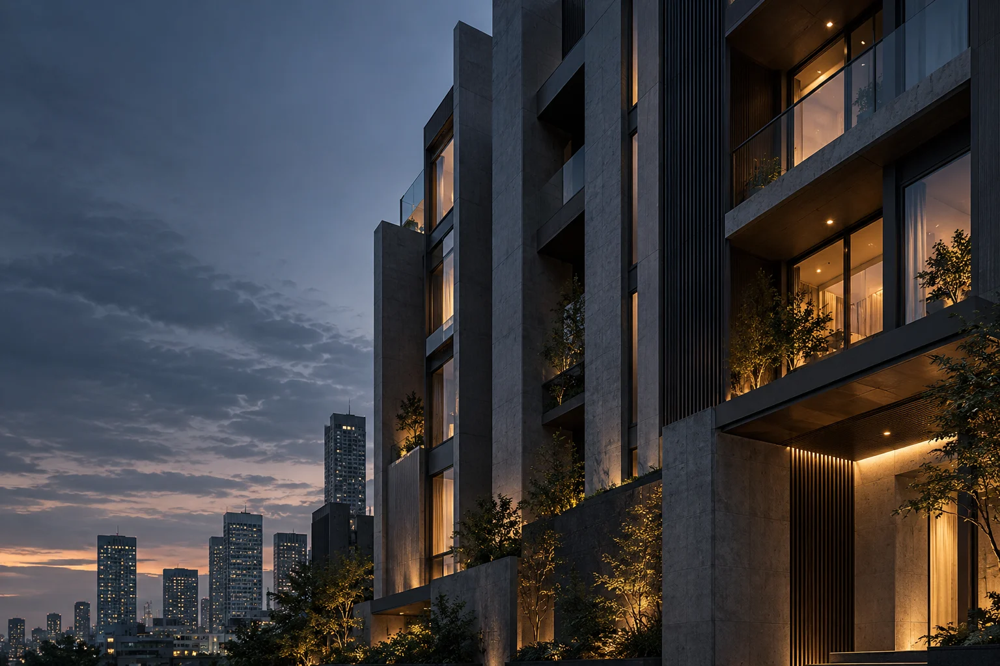

HOUSING & RECOVERY依存症回復のための
依存症回復のための
住宅提供
回復を目指す方が、安心して生活を整えられる住まいを提供します。プライバシーを尊重し、再発への不安にも寄り添います。
このサービスを相談する
帰る場所のない人に、
「立ち直れ」と言うことはできません。
依存症回復の途上にある方、刑務所出所後の方、DV被害を受けた母子、LGBTQ+当事者、外国人住民など、住まいを見つけにくい事情を抱えた方々へ。ルミライズは、まず住まいを確保する「Housing First」の理念で、生活を立て直す土台を整えます。
住まいは、再出発の前提です。安心できる日常を起点に、一人ひとりの回復と社会復帰を支えていきます。
事業・サービスを見る安心して暮らせる場所を、再出発の土台に。
一人ひとりのペースで、生活を立て直す。
必要な住まいと支援を、
それぞれの状況に合わせて。
回復を目指す方が、安心して生活を整えられる住まいを提供します。プライバシーを尊重し、再発への不安にも寄り添います。
このサービスを相談する出所後の住居不安を早期に解消し、社会復帰の土台をつくります。入居手続きから生活再建、就労支援との連携まで支えます。
このサービスを相談する相模原ダルク利用者専用の住まいです。夜間も安心して過ごせる環境を整え、ダルクのプログラムと連携し、生活リズムの安定を支えます。
このサービスを相談する一人ひとりの尊厳とプライバシーを大切に。差別や偏見への不安に配慮し、安心して暮らせる住まいの確保と定着を支援します。
このサービスを相談する母親と子どもの安全を最優先に。緊急避難先の確保から、行政・福祉・法律相談への接続、生活再建までを支えます。
このサービスを相談する言語・制度・文化の違いによる住まいの課題に対応。入居手続き、生活ルールの案内、就労窓口への接続を支援します。
このサービスを相談する生活が整う。人とつながる。明日を考えられる。
私たちが届けたいのは、その先に続く安心です。
住まいの提供から、日々の相談まで。
尊厳を大切に、生活全体を支えます。
入居後3か月・6か月・1年・2年の面談などを通じて、生活の困りごとや不安を一緒に整理します。相談内容のプライバシーを守ります。
就労支援機関と連携し、仕事探し、面接や書類の準備から、就労後の定着までを支えます。
福祉事務所や医療機関などと協力し、必要な制度や機関につなぎます。制度申請の実務も支援します。
生活習慣、家計や健康の管理、コミュニケーションなど、自分らしく暮らすための力を育みます。
電話・メールでご相談いただけます。来所は事前に日時をご相談ください。匿名の相談も可能です。
状況に応じて必要な書類をご案内します。取得が難しい場合もサポートします。
実際の環境を確認し、生活設計に合う住まいを一緒に考えます。
審査後、契約内容を丁寧にご説明します。初期費用についてもご相談いただけます。
入居後も定期的に支援を続けます。困ったときに相談できる関係を大切にします。
05 / QUESTIONS
まず住まいを確保し、安心できる環境のなかで生活を立て直すことを大切にしているからです。住まいを、回復と再出発の土台と考えています。
はい、ご相談いただけます。状況を伺ったうえで、必要な手続きや選択肢を一緒に整理します。
まずはお電話で状況をお知らせください。電話受付は平日9:00〜18:00です。状況と空き状況を確認し、対応方法をご案内します。
初回相談は無料です。家賃・初期費用などは物件や支援内容によって異なります。契約前に内容を確認し、利用できる制度も一緒に整理します。
住まいのこと、これからの生活のこと。
まずは、今の状況を聞かせてください。
初回相談は無料です。
電話受付 平日 9:00–18:00
info@lumirize.com